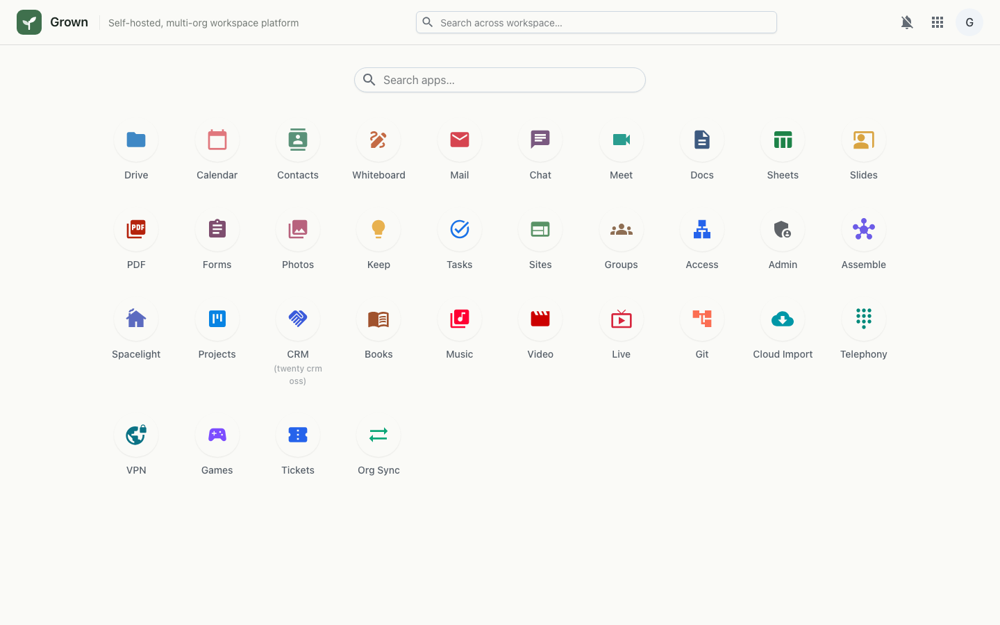
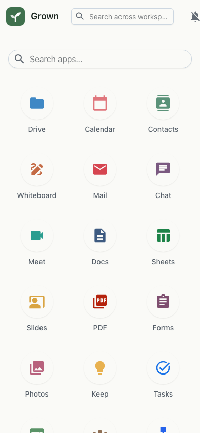

File storage and sharing with previews, versions and rich photo metadata — plus share links you can set to expire.
Drive is your workspace's file storage. Organise files in folders, preview them in the browser, keep a full version history, and share them — with specific people or via a link that can expire. Image files surface their EXIF metadata, including camera, date taken and GPS location.


Drive stores file content and metadata in your workspace, with each file
tracking its versions. Shares are token links carrying a role and an optional expiry,
reachable at /drive/share/<token>, alongside per-user access grants.
Previews and EXIF parsing run in the browser, and everything is gated by your
workspace single sign-on.